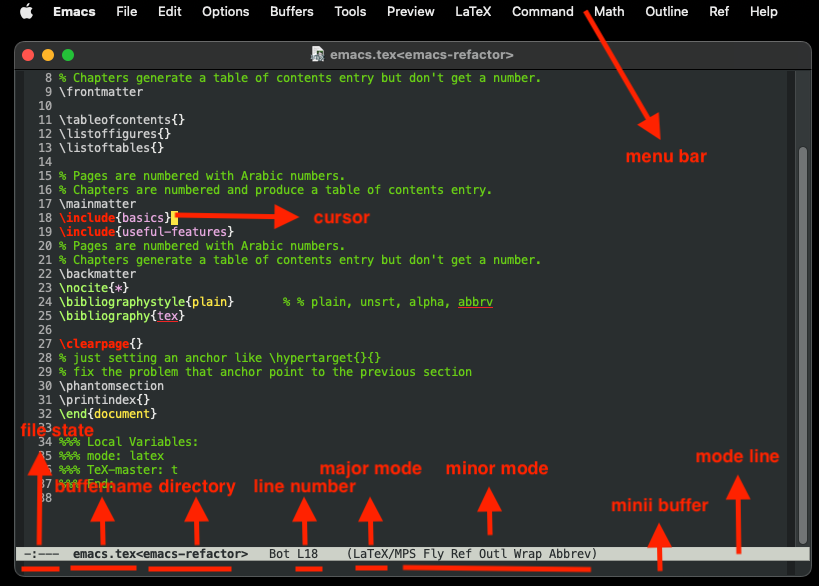

emacs
Table of Contents
- 1. Emacs
- 2. DONE Helps
- 3. DONE Editing
- 4. DONE Search and Replace
- 5. Windows and Frames
- 6. DONE Org Mode
- 7. DONE Directory Editor
- 7.1. DONE Navigating
- 7.2. DONE Flagging for Deletion
- 7.3. DONE Visiting Files
- 7.4. DONE Marking
- 7.5. DONE Operating on Files
- 7.6. DONE Shell Commands
- 7.7. DONE Transforming File Names
- 7.8. DONE Subdirectories
- 7.9. DONE Updating the Dired Buffer
- 7.10. DONE Editing the Dired Buffer
- 7.11. DONE Other Featuers
- 8. EasyPG
- 9. DONE Shell
- 10. DONE Spell
- 11. DONE Macro
- 12. Useful Commands
- 13. DONE Input Phonetic Symbols
- 14. DONE Simple ASCII Picture
- 15. Calendar
1. Emacs
Emacs is a text editor.
Emacs is important because of the integration of different things you need to do.
It's more than just an editor; it's a complete environment that can change the way you work.
Learning to use an editor is a matter of learning finger habits.
The finger-habits approach implies the way to learn Emacs.
You can form only a few new habits each day.
1.1. Buffer
You don't edit files with Emacs.
Instead, Emacs copies the contents of a file into a temporary buffer and you eidt that.
The file on disk doesn't change until you save the buffer.
This feature used the thought "keep the original data safe".
1.2. Mode
There are many tasks or needs around us and modes exists for them.
A mode collect all the feature you need.
Modes allows Emacs to be the kind of editor you want for different tasks.
A buffer can be in only one major mode at a time.
Minor modes defines a particular aspect of Emacs’s behavior and can be turned on and off within a major mode.
1.3. Backup File
A backup file is a copy of the old contents of a file you are editing.
Emacs makes a backup file the first time you save a buffer into its visited file.
The contents of the backup file normally remain unchanged once it exists.
During the editing, you may save the buffer several times and the content of the original file will change accordingly.
The name of the backup file is the same as the name of the file you’re editing, with a tilde added.
For example, if you are editing the file text, the backup file is text~.
1.4. Auto Save Files
The save files are used save the content of current buffer if you forget to save the buffer and the Emacs or system crashed.
Emacs will auto save you files from time to time into auto-save files.
The name of an auto-save file is the same as the name of the file you are editing, with a sharp (#) added to the beginning and the end.
For example, if you are editing the file text, its auto-save file is #text#.
1.5. Point, Cursor and Mark
A cursor is on the top the char.
The point is immediately before the character.
The mark is another position in the buffer.
The part of the buffer between point and mark is called the region.
1.6. Kill Ring
Kill ring is a ring used to keep the content you deleted (in Emacs, called "kill").
This feature enable you to recover or paste the content you deleted not only recently but also long time ago (depending the kill ring size you set).
What exactly goes into the kill ring?
Only the text delete by Del and C-d (without numeric argument) does not go into kill ring.
All the else will go into kill ring.
1.7. Binding
1.8. Display

2. DONE Helps
C-h
3. DONE Editing
3.1. DONE Moving the Cursor
| C-f | forward one char |
|---|---|
| C-b | backward one char |
| C-n | next line |
| C-p | previous line |
| M-f | forward one word |
| M-b | backward one word |
| C-a | head of the line |
| C-e | end of the line |
| M-a | forward one sentence |
| M-e | backward one sentence |
| M-} | forward one paragraph |
| M-{ | backward one paragraph |
| C-v | forward one screen |
| M-v | backward one screen |
| C-l | recenter |
| C-x ] | forward one page |
| C-x [ | backward one page |
| M-< | beginning of buffer |
| M-> | end of bufferf |
| M-m | first non-whitespace character |
| M-g M-g | go to a specified line |
3.2. DONE Marking the Region
| C-Space or C-@ | set the mark |
| C-x C-x | exchange pointer and mark |
| M-h | mark paragraph |
| C-x h | mark buffer |
| M-@ | mark word |
| C-M-@ | mark Lisp expression |
| C-M-h | mark Lisp defun |
| C-x C-p | mark page |
Mark command can be pressed multiple times to mark several specified regions.
3.3. DONE Editing
| Backspace | delete backward char |
|---|---|
| C-d | delete current char |
| M-Backspace | delete between beginning of word and pointer |
| M-d | delete between cursor and end of word |
| C-k | delete between cursor and end of line |
| M-k | delete between cursor and end of sentence |
| M– M-k | delete between beginning of sentence and pointer |
| C-w | copy marked region |
| C-y | paste most recently deleted or copied text |
| M-c | Capitalize |
| M-u | Upper |
| M-l | Lower |
4. DONE Search and Replace
| C-s | incremental search |
|---|---|
| C-u C-s or C-M-s | incremental regular expression search |
| M-% | query replace |
| C-u M-% | query replace word |
| C-M-% | regular expression replace |
You can type C-h k C-s to get the help information to learn how to use incremental search well.
5. Windows and Frames
6. DONE Org Mode
6.1. DONE Outlines
Org mode is implemented on top of Outline mode.
Org headlines start on the left margin with one or more stars followed by a space.
6.1.1. DONE Visibility
| TAB | Subtree cycling. (point on headline) |
| C-u TAB | Same as S-TAB. |
| C-u C-u TAB | Switch bach to the startup visibility. |
| C-u C-u C-u TAB | Show all, including drawers. |
| C-c C-r | Reveal context around point, showing the current entry, the following heading and the hierarchy above. |
| C-c C-k | Expose all the headings of the subtree, but not their bodies. |
| C-c TAB | Expose all direct children of the subtree. With a numeric prefix argument N, expose all children down to level N. |
| C-c C-x b | Show the current subtree in an indirect buffer. With a numeric prefix argument N, go up to level N and then take that tree. With a C-u prefix, do not remove the previously used indirect buffer. |
| C-c C-x v | Copy the visible text in the region into the kill ring. |
6.1.2. DONE Motion
| C-c C-n | Next heading. |
| C-c C-p | Previous heading. |
| C-c C-f | Next heading same level. |
| C-c C-b | Previous heading same level. |
| C-c C-u | Backward to higher level heading. |
| C-c C-j | Jump to a different place without changing the current line visibility. |
6.1.3. DONE Structure Editing
| M-RET | Insert a new heading, item or row |
| C-RET | Insert a new heading at the end of the current subtree. |
| M-S-RET | Insert new TODO entry with same level as current heading. |
| C-S-RET | Insert new TODO entry with same level as current heading. The new headline is inserted after the current subtree. |
| TAB | In a new entry with out text yet, the first TAB demotes the entry to become a child of the previous one. The next TAB makes it a parent, and so on, all the way to top level. |
| M-LEFT/RIGHT | Promote or demote current heading by one level. |
| M-S-LEFT/RIGHT | Promote or demote current subtree by one level. |
| M-UP/DOWN | Move subtree up/down. |
| C-c @ | Mark the subtree at point. |
| C-c C-x C-w | Kill subtree. |
| C-c C-x M-w | Copy subtree. |
| C-c C-x c | Clone a subtree by making a sibling copies of it. |
| C-c ^ | Sort same level entries. |
| C-x n s | Narrow buffer to current subtree. |
| C-x n b | Narrow buffer to current block. |
| C-x n w | Widen. |
| C-c * | Turn a normal line or plain list item into a headline. |
6.1.4. DONE Sparse Trees
An important feature of Org mode is the ability to construct sparse trees for selected information in an outline tree, so that the entire document is folded as much as possible, but the selected information is made visible along with the headline structure above it
| C-c / | Prompts for an extra key to select a sparse-tree creating command |
| M-g n | Jumpt to the next sparse tree match. |
| M-g p | Jumpt to the previous sparse tree match. |
6.2. DONE Plain Lists
Org knows ordered lists, unordered lists, and description lists.
- unordered list items start with '-', '+' or '*' as bullets. (Whe using ∗ as a bullet, lines must be indented.)
- Ordered list items start with a numberal followed by either a period or a right parenthesis.
- Description list items are unordered list items and contain the separator '::' to distringuish the description term from the description.
| M-RET | Insert new item at current level. |
| M-S-RET | Insert a new item with a checkbox. |
| M-UP/DOWN | Move the item including subitem up/down. |
| M-LEFT/RIGHT | Decrease/increase the indentation of an item, leaving children alone. |
| M-S-LEFT/RIGHT | Decrease/increase the indentation of an item, including subitems. |
| C-c C-c | Toggle the state of the checkbox or verify bullets and indentation consistency. |
| C-c - | Cycle the entire list level through the different itemize/enumerate bullets. |
| C-c * | Turn a plain list item into a headline. |
| C-c C-* | Turn the whole plain list into a subtree of the current heading. |
| S-LEFT/RIGHT | Cycle bullet styles. |
| C-c ^ | Sort the plain list. |
6.2.1. DONE Checkboxes
Every item in a plain list can be made into a checkbox by starting it with the string [ ].
This feature is similar to TODO items, but is more lightweight.
Checkboxes are not included into the global TODO list, so they are often great to split a task into a number of simple steps.
* light task [25%]
- [-] task 1 [33%]
- [X] task 1-1
- [ ] task 1-2
- [ ] task 1-3
- [ ] task 2
- [X] task 3
- [ ] task 4
- C-c C-c
- Toggle checkbox status or presence. With a single prefix argument, add en empty checkbox or remove the current one. With a double prefix argument, set it to '[-]'.
- M-S-RET
- Insert a new item with checkbox.
- C-c C-x o
- Toggle the 'ORDERED' property of the entry.
- C-c #
- Update the statistics cookie in the current outline entry. When called with a C-u prefix, update the entire file.
6.3. DONE Drawers
Drawers let you keep information associated with an entry, but normally do not show it.
| C-c C-x d | Insert a drawer |
| C-u C-c C-x d | Create a 'PROPERTIES' drawer. |
| C-c C-x p | Set a proerty. |
| C-c C-z | Add a time-stamped not to the 'LOGBOOK' drawer. |
Properties are key-value pairs associated with an entry. They live in a special drawer with the name ‘PROPERTIES’. Each property is specified on a single line, with the key (surrounded by colons) first, and the value after it.
When you are in the properties, you can use C-c C-c to do property operations.
6.4. DONE Habit
A habit in Emacs is just a TODO item with some properitis to track the consistency of what you want to do.
To enable habit module, add the following code to your configuration file.
(add-to-list 'org-modules 'org-habit t)
A habit has the following properties:
- It is a TODO item.
- The property
styleis set to 'habit'. - It has a schedule date with interval.
Here's a example:
** Habit SCHEDULED: <2023-11-13 Mon .+1d> :PROPERTIES: :STYLE: habit :END:
In agenda view, you can change if only show habit for today by pressing C-u K.
6.5. Table
Any line with '|' as the first non-whitespace character is considered of a tablel.
'|' is also the column separator.
6.5.1. DONE Table Editor
| Commands | Meaning |
|---|---|
| C-c | | Create or convert a region into table. You can use a prefix argument to force a specific separator: C-u forces CSV, C-u C-u forces TAB, C-u C-u C-u prompts for a regular expression to match the separator. |
| C-c C-c | Re-align the table. |
| TAB | Re-align the table, move to the next field. Creates a new row if necessary. |
| S-TAB | Re-align the table, move to the previous field. |
| RET | Re-align the table, move to the next row. Creates a new row if necessary. At the beginning or end of a line, RET still inserts a new line, so it can be used to split a table. |
| M-a | Move to beginning of the current table field, or on to the previous field. |
| M-e | Move to end of the current table field, or on to the next field. |
| M-LEFT/RIGHT | Move the current column left/right. |
| M-S-LEFT | Kill the current column. |
| M-S-RIGHT | Insert a new column at point position. Move the recent column and all cells to the right of this column to the right. |
| M-UP/DOWN | Move the current row up/down. |
| M-S-UP | Kill the current row or horizontal line. |
| M-S-DOWN | Insert a new row above the current row. |
| S-UP/DOWN/LEFT/RIGHT | Move cell up/down/left/right by swapping with adjcent cell. |
| C-c - | Insert a horizontal line below current row. With a prefix argument, the line is created above the current line. |
| C-c RET | Insert a horizontal line below current row, and move point into the row below that line. |
| C-c ^ | Sort the table lines in the region. |
| C-c C-x M-w | Copy cell. |
| C-c C-x C-w | Cut cell. |
| C-c C-x C-y | Paste cell. |
| C-c + | Sum the numbers in the current column, or in the rectangle defined by the active region. The result is shown in the echo area and can be inserted with C-y. |
| S-RET | When current field is empty, copy from first non-empty field above. When not empty, copy current field down to next row and move point along with it. |
| C-c ` | Edit the current field in a separate window. This is useful for fields that are not fully visible. |
6.5.2. DONE Column Width and Alignment
| C-c TAB | Shrink or expand current column. |
| C-u C-c TAB | Shrink all columns with a column width. Expand the others. |
| C-u C-u C-c TAB | Expand all columns. |
You can ajust the width and alignment with the speificications:
| <l> | <r> | <c> | <l10> | | hello | hello world | hello | hello world. I am mingming li. | | hello world | hello | hello world | hello |
6.5.3. DONE Column Groups
In order to specify column groups, you can use a special row where the first field contains only ‘/’.
The further fields can either contain ‘<’ to indicate that this column should start a group, ‘>’ to indicate the end of a column, or ‘<>’ (no space between ‘<’ and ‘>’) to make a column a group of its own.
| N | N^2 | N^3 | N^4 | sqrt(n) | sqrt[4](N) | |---+-----+-----+-----+---------+------------| | / | < | | > | < | > | | 1 | 1 | 1 | 1 | 1 | 1 | | 2 | 4 | 8 | 16 | 1.4142 | 1.1892 | | 3 | 9 | 27 | 81 | 1.7321 | 1.3161 | |---+-----+-----+-----+---------+------------| #+TBLFM: $2=$1^2::$3=$1^3::$4=$1^4::$5=sqrt($1)::$6=sqrt(sqrt(($1)))
| N | N2 | N3 | N4 | sqrt(n) | sqrt[4](N) |
|---|---|---|---|---|---|
| 1 | 1 | 1 | 1 | 1 | 1 |
| 2 | 4 | 8 | 16 | 1.4142 | 1.1892 |
| 3 | 9 | 27 | 81 | 1.7321 | 1.3161 |
6.5.4. The Spreadsheet
6.5.5. Plot
To use this function, you need to install Gnuplot and gnuplot mode in your Emacs.
| Grades | Mathematics | Physics |
|---|---|---|
| Ben | 9.2 | 9.9 |
| Tom | 6.7 | 7.7 |
| Tim | 7.5 | 6.7 |
| Dean | 8.0 | 7.0 |
set title "Grades in Physics and Mathematics" set style data histogram set xlabel "Student" set ylabel "Grades" set auto x plot data using 2:xtic(1) ti col, '' u 3 ti col
6.6. DONE Hyperlinks
The general link format:
[[LINK][DESCRIPTION]] or [[LINK]]
| C-c C-l | Insert a link. With a C-u prefix, prompts for a file to link to. When point is on an existing link, edit the link and description parts of the link. |
| C-c C-o | Open the link. |
| M-n | Next link. 1 |
| M-p | Previous link. |
6.6.1. Internal Links
A link that does not look like a URL—i.e., does not start with a known scheme or a file name—refers to the current document.
[[#my-costom-id]] [[*Hyperlinks]] [[my-target]]
The links shown above link to the following position
* Some Topics :PROPERTIES: :CUSTOM_ID: my-custom-id :END: * Hyperlinks <<my-target>>
A construct like [[#my-costom-id]] specifically targets the entry with the ‘CUSTOMID’ property set to ‘my-custom-id’.
Also, an internal link looking like [[*Some section]] points to a headline with the name ‘Some section’.
A link that does not look like a URL—i.e., does not start with a known scheme or a file name—refers to the current document.
6.6.2. Radio Targets
Org can automatically turn any occurrences of certain target names in normal text into a link.
So without explicitly creating a link, the text connects to the target radioing its position.
Radio targets are enclosed by triple angular brackets.
For example, a target ‘My Target’ causes each occurrence of ‘my target’ in normal text to become activated as a link.
The Org file is scanned automatically for radio targets only when the file is first loaded into Emacs.
To update the target list during editing, press C-c C-c with point on or at a target.
6.7. DONE Tags
An excellent way to implement labels and contexts for cross-correlating information is to assign tags to headlines.
Every headline can contain a list of tags; they occur at the end of the headline.
Tags are normal words containing letters, numbers, ‘_’, and ‘@’.
Tags must be preceded and followed by a single colon, e.g., ‘:work:’.
Several tags can be specified, as in ‘:work:urgent:’.
6.7.1. Tag Inheritance
Tags make use of the hierarchical structure of outline trees.
If a heading has a certain tag, all subheadings inherit the tag as well.
6.7.2. Setting Tags
| C-c C-q | Set tags |
| C-c C-c | When point is in a headline, this does the same as C-c C-q. |
Org supports tag insertion based on a list of tags.
By default this list is constructed dynamically, containing all tags currently used in the buffer.
You may also globally specify a hard list of tags with the variable org-tag-alist.
Finally you can set the default tags for a given file using the ‘TAGS’ keyword, like
#+TAGS: work home
If you have globally defined your preferred set of tags using the variable org-tag-alist, but would like to use a dynamic tag list in a specific file, add an empty ‘TAGS’ keyword to that file:
#+TAGS:
6.7.3. Tag Hierarchy
6.7.4. Tag Searches
| C-c / m | Create a sparse tree with all headlines matching a tags search. With a C-u prefix argument, ignore headlines that are not a TODO line. |
| C-c a m | Create a global list of tag matches from all agenda files. |
| C-c a M | Create a global list of tag matches from all agenda files, but check only TODO items. |
6.8. TODO TODO Items
Org mode does not maintain TODO lists as seperate documents. Instead, TODO items are an integral part of the notes file, because TODO items usually come up with taking notes. Of course, this technique for managing TODO items scatters them throughout your notes file. Org mode compensate for this by providing methods to give you an overview of all the things that you have to do.
6.8.1. Basic TODO Functionality
C-c C-t :
Rotate the TODO state. If TODO keywords have fast access keys, prompt for a TODO keyword through the fast selection interface. The same state changing can also be done “remotely” from the agenda buffer with the t command key.
S-RIGHT S-LEFT:
Select the following/preceding TODO state, similar to cycling.
C-c / t:
7. DONE Directory Editor
7.1. DONE Navigating
All the usual Emacs cursor motion commmands are available in Dired buffers.
| n | Next line. |
| p | Previous line. |
| DEL | Move up and unflag |
| j | Prompts for a file name using the minibuffer and jump to that line. |
| M-s f C-s | Performs a forward incremental search in the Dired buffer, looking for matches only amongst the file names and ignoring the rest of the text in the buffer |
| M-s f M-C-s | Does the same, using a regular expression search. |
7.2. DONE Flagging for Deletion
Flag the files for deletions.
| d | Flag this file for deletion. |
| u | Unflag. |
| x | Delete files flagged for deletion. |
This commands flag many files for deletion.
| # | Flag all auto-save files for deletion. |
| ~ | Flag all backup files for deletion. |
| . | Flag excess numeric backup files for deletion. The oldest and newest few backup files of any one file are exempt; the middle ones are flagged. |
| % & | Flag files whose names match the regular expression specified by the variable dired-garbage-files-regexp. |
| % d | Flags all files whose names match a specified regular expression |
7.3. DONE Visiting Files
To visit or examine the files.
| f | Visit the file. |
| RET | Equivalent to f. |
| e | Equivalent to f. |
| o | Like f, but uses another window. |
| C-o | Visit the file and display the buffer in another window, but do not select that window. |
| v | View the file with View mode. View mode provides convenient commands to navigate the buffer but forbids changing it. |
| ^ | Visit the parent directory. |
7.4. DONE Marking
- State "DONE" from
Instead of flagging a file with ‘D’, you can mark the file with some other character (usually ‘*’).
Most Dired commands to operate on files use the files marked with ‘*’.
The only command that operates on flagged files is x, which deletes them.
| m | Mark the current file. |
| * N | Report what the number and size of the marked files. |
| * * | Mark all executable files. With a numeric argument, unmark all those files. |
| * @ | Mark all symbolic links. With a numeric argument, unmark all those files. |
| * / | Mark all files which are directories, except for . and … With a numeric argument, unmark all those files. |
| * s | Mark all the files in the current subdirectory, aside from . and … |
| u | Remove any mark on this line. |
| Del | Move point to previous line and remove any mark on that line. |
| U | Unmark all. |
| * ? markchar | Remove all marks that use the character markchar. |
| M-} | Move down to the next marked file. |
| M-{ | Move up to the previous marked file. |
| t | Toggle all marks. (Files marked with *) |
| * c old-markchar new-markchar | Replace all marks that use the character old-markchar with marks that use the character new-markchar. |
| % m regexp RET | Mark (with *) all files whose names match regexp. |
| % g regexp | Mark (with *) all files whose contents contain a match for regexp. |
7.5. DONE Operating on Files
This commands operate on one file or several files.
All of them let you specify the files to manipulate in these ways:
- If you give the command a numeric prefix argument n, it operates on the next n files, starting with the current file. (If n is negative, the command operates on the −n files preceding the current line.)
- Otherwise, if some files are marked with ‘*’, the command operates on all those files.
- Otherwise, the command operates on the current file only.
| C new RET | Copy the file. (Like cp in shell) |
|---|---|
| D | Delete the specified files. |
| R new RET | Rename the specified files. (Like mv in shell) |
| H new RET | Make hard links. (Like ln in shell) |
| S new RET | Make symbolic links. (Like ls -s in shell) |
| Y new RET | Make relative symbolic links. |
| M modspec RET | Change the mode (permission bits). |
| G newgroup RET | Chanage the group. |
| O newowner RET | Change the owner. |
| Z | Compress/uncompress the specified files. Each marked file is compressed into its own archive. |
| c | Compress the specified files into a single archive. |
| L | Load the specified Emacs Lisp files. |
| B | Byte compile the specified Emacs Lisp files. |
| A regexp RET | Search all the specified files for the regexp. |
| Q regexp RET to RET | Replace matches for regexp with the string to. |
| :e | Encrypt the specified files. |
| :d | Decrypt the specified files. |
| :s | Digitally sign the specified files. |
| :v | Vevify digital signatures on the specified files. |
7.6. DONE Shell Commands
| ! | Reads a shell command string in the minibuffer, and runs that shell command on one or more files. |
| X | A synonym for ! |
| & | Does the same, except that it runs the shell command asynchronously. |
When the command operates on more than one file, it runs multiple parallel copies of the specified shell command, one for each file.
As an exception, if the specified shell command ends in ';' or ';&', the shell command is run in the background on each file sequentially.
7.7. DONE Transforming File Names
| % u | Rename each of the selected files to an upper-case name. |
| % l | lower-case name. |
| % R from RET to RET | Rename computing the new name by regular-expression substitution from the name of the old file. |
| % C from RET to RET | Copy. |
| % H from RET to RET | Make hard links. |
| % S from RET to RET | Make soft links. |
| % Y from RET to RET | Make relative soft links. |
7.8. DONE Subdirectories
| i | Insert the content of a subdirectory. |
| C-u i | Insert subdirectory with specified ls switches. |
| l | Update the subdirectory's contents. |
| C-u l | Change the ls swithces of already inserted subdirectory (on subdirectory header line). |
| C-u k | Remove the subdirectory listing (on subdirectory header line). |
| C-M-n | Go to next subdirectory header line, regardless of level. |
| C-M-p | Go to previous subdirectory header line, regardless of level. |
| C-M-u | Go up to the parent diretory header line. |
| C-M-d | Go down in the diretory tree, to the first subdirectory's header line. |
| < | Move up to the previous directory-file line. |
| > | Move down to the next directory-file line. |
| M-G | Prompt for a directory and move to its directory-file line. |
| $ | Hide or show the subdirectory that point is in, and move point to the next subdirectory. |
| M-$ | hide or show all subdirectories. |
If the subdirectory's contents are already present in the buffer, the i command moves to it.
In either case, i sets the Emacs mark before moveing, so C-u C-SPC returns to your previous position in the Dired buffer.
7.9. DONE Updating the Dired Buffer
| g | Update the entire contents. |
| l | Update the specified files. |
| k | Delete the specified file lines - not the files, just the lines. (on next n files for marked files, not on current file.) |
| s | Toggle between alphabetical order and date/time order. |
| C-u s switches RET | Refresh the Dired buffer using switches. |
7.10. DONE Editing the Dired Buffer
Wdired is a special mode that allows you to perform file operations by editing the Dired buffer directly (the “W” in “Wdired” stands for “writable”).
To enter Wdired mode, type C-x C-q (dired-toggle-read-only) while in a Dired buffer.
| C-x C-q | Enter Wdired mode |
7.11. DONE Other Featuers
| + | Create a directory |
| w | Puts the names of the marked (or next n) files into the king ring. |
| W | Use the standard configured brower to view that file. |
8. EasyPG
EasyPG Assistant is an Emacs user interface to GNU Privacy Guard (GnuPG).
EasyPG Assistant is a part of the package called EasyPG, an all-in-one GnuPG interface for Emacs.
EasyPG also contains the library interface called EasyPG Library.
8.1. GnuPG
To install the package (on MacOS):
brew install gnupg
8.1.1. Generating a New Keypair
gpg --gen-key
EasyPG Assistant commands are prefixed by 'epa-'.
When decryping a file, it may produce the error:
Error while decrypting with "/usr/local/bin/gpg":
gpg: encrypted with cv25519 key, ID C1349F68EF9FE731, created 2023-11-16
"Mingming Li <mingmingli916@gmail.com>"
gpg: public key decryption failed: Inappropriate ioctl for device
gpg: decryption failed: Inappropriate ioctl for device
This can be solved by setting the environment:
export GPG_TTY=$(tty)
9. DONE Shell
| M-! cmd RET | Run the shell command cmd and display the output. With a numeric argument, it insert output into the current buffer. |
| M-| cmd RET | Run the shell command cmd with region content as intput. With a numeric argument, it replaces the old region with output. |
| M-& cmd RET | Run the shell command cmd asynchronously. |
| M-x shell | Run a subshell with input and output throught an Emacs buffer. |
| M-x term | Run a subshell with input and output through an Emacs buffer. Full terminal emulation is available. |
| M-x eshell | Invokes a shell implemented entirely in Emacs. |
9.1. Term Mode
The terminal emulator uses Term mode, which has two input modes.
In line mode, Term basically acts like Shell mode.
In char mode, each character is sent directly to the subshell, as terminal input; the sole exception is the terminal escape character, which by default is C-c.
| C-c C-j | Switch to line mode. Do nothing if already in line mode |
| C-c C-k | Switch to char mode. Do nothing if already in char mode. |
| C-c C-q | Toggle the page-at-a-time featuer. |
The following commands are only available in char mode:
| C-c C-c | Send a literal C-c to the sub-shell |
| C-c char | This is equivalent to C-x char in normal Emacs. |
10. DONE Spell
10.1. Ispell
Emacs provide Ispell interface.
We say "interfaces" because Emacs does not include the executable.
On MacOSX, There are two popular software manager MacPorts and Homebrew.
You can use any of it to install Ispell.
After installation, use command which ispell in terminal to locate the Ispell executable file.
In Emacs, type C-h a ispell to get all functions containing the keyword ispell.
You can find the function ispell-check-version.
Type M-x ispell-check-version to check whether Ispell is working correctly.
You may encounter the problem that says:
can not find hunspell dictionary with a .affix
You can use the command:
hunspell -D
to check the available dictionaries.
You can go to the website https://extensions.libreoffice.org/en/extensions/show/english-dictionaries to download the dictionary.
Download it then extract the .aff and .dic files to one of the locations listed by hunspell -D.
unzip dict-en.oxt -d dict-en cp dict-en/en_* ~/Library/Spelling/
| M-$ | ispell-word |
| ispell-buffer | |
| ispell-region | |
| ispell-complete-word |
You can use C-h f ispell-help for the options available when a misspelling is encountered.
10.2. Flyspell
Flyspell highlights misspelled words as you type.
There are two mode related with Flyspell: flyspell-mode and flyspell-prog-mode.
The latter mode is designed for programmers.
In this mode Emacs highlights misspellings only in comments or strings.
To check existing text, you run M-x flyspell-buffer Enter.
Flyspell highlights misspelled words in red.
Words that are repeatedly misspelled are highlighted in yellow.
| C-. | flyspell-auto-correct-word |
| C-; | flyspell-auto-correct-previous-word |
11. DONE Macro
In Emacs, a macro is simply a group of recorded keystrokes you can play back over and over again.
Macros are a great way to save yourself repetitive work.
| C-x ( | start macro definition |
|---|---|
| C-x ) | end macro definition |
| C-x e | execute the last defined macro |
| C-x C-k r | apply last macro to all lines in region |
| C-x C-k e | edit macro |
| C-x C-k C-d | delete current macro from macro ring |
| C-x C-k C-t | swap first two macros in macro ring |
| C-x C-k C-p | move to previous macro in macro ring |
| C-x C-k C-n | move to next macro in macro ring |
| C-x C-k b | bind macro |
| C-x C-k n | name macro |
11.1. Persist Your Macro
- define a macro
- name the defined macro
- open a file
- M-x insert-kbd-macro RET <macroname> RET
- add "(load-file "<macro-file-path>")" to your Emacs configuration file (like .emacs)
- add "(global-set-key "\C-x\C-k<your key>" '<your macro name>)" to your Emacs configuration file (like .emacs)
11.2. Pausing a Macro for Keyboard Input
When you’re defining a macro, type C-u C-x q at the point where you want the recursive edit to occur.
Emacs enters a recursive edit.
You can tell you’re in a recursive edit because square brackets appear on the mode line.
Nothing you type during the recursive edit becomes a part of the macro.
You can type whatever you want to and then press C-M-c to exit the recursive edit.
11.3. Adding a Query to a Macro
When you’re defining a macro, type C-x q at the point where you want to add a query.
Nothing happens immediately; go on defining the macro as you normally would.
When you execute the macro and it gets to the point in the macro where you typed C-x q, Emacs prints a query in the minibuffer:
Proceed with macro? (y, n, RET, C-l, C-r)
Here’s the meaning of the options:
- y means to continue and go on to the next repetition, if any.
- n means to stop executing the macro but go on to the next repetition, if any.
- Enter means to stop executing the macro and cancel any repetitions.
- C-r starts a recursive edit. To exit a recursive edit, press C-M-c.
- C-l puts the line the cursor in on in the middle of the screen.
12. Useful Commands
| C-x C-SPC | go back to the previous mark. |
| C-c C-, | insert block |
| C-c % | push the current position onto the org mark ring. |
| C-c & | return to the previous position |
| C-c C-x f | footnote |
13. DONE Input Phonetic Symbols
To input phonetic symbols, you can input a specified input-method.
M-x list-input-methods can list the avaiable input methods.
Normally, you can use ipa-x-sampa, ipa-kirshenbaum, ipa or ipa-praat to input international phoetic symbols.
To enable or disable the the input method, use C-\ method RET.
To select a new input method, use C-x RET C-\ mehtid RET.
To get the key sequence for inserting the corresponding characters, use C-h I method RET.
| C-\ | enable or disable a input method |
| C-x RET C-\ | select a new input method |
| C-h I | get help for a input method |
| M-x list-input-methods |
14. DONE Simple ASCII Picture
Emacs includes a picture mode that allows you to draw simple pictures using keyboard characters; it also includes artist mode, which enables you to draw quickly using the mouse.
14.1. Picture Mode
To enter picture mode, type M-x edit-picture.
Typing C-c C-c exits picture mode and returns you to whatever major mode you were in before.
In picture mode, you can “draw” with any character in any of eight directions.
Although you can draw in eight directions, only one direction is available at a time; this direction is referred to as the default direction.
When you first enter picture mode, the default direction is right.
up C-c ^
northwest C-c ` northeast C-c '
left C-c < right C-c >
southwest C-c / southeast C-c \
down C-c .
| C-c C-f | moves forward in the default direction |
| C-c C-b | move backward in the default direction |
| C-o | insert a new line |
14.2. Artist Mode
To enter artist mode, M-x artist-mode.
To exit, C-c C-c.
In this mode, you can choose what you want to draw in "Artist" in main bar.
15. Calendar
To display the calendar: M-x calendar.
| Group | Binding | Meaning |
|---|---|---|
| Movement | C-f | forward one day |
| C-b | backward one day | |
| C-n | forward one week | |
| C-p | backward one week | |
| M-} | forward one month | |
| M-{ | backward one month | |
| C-x ] | forward one year | |
| C-x [ | backward one year | |
| C-a | beginning of week | |
| C-e | end of week | |
| M-a | beginning of month | |
| M-e | end of month | |
| M-< | beginning of year | |
| M-> | end of year | |
| g d | go to a specified day | |
| o | put the specified month in the middle of the display | |
| Holidays | a | show the holidays |
| x | mark the holidays | |
| u | unmark the holidays | |
| Diary | i d | insert diary entry |
| i w | insert weekly diary entry | |
| i m | insert monthly diary entry | |
| i y | insert yearly diary entry | |
| i a | insert anniversary diary entry | |
| m | mark dairy entries | |
| d | view diary entries | |
| s | display diary file |
Footnotes:
This is achieved by:
( with−eval−after−load ' org (define−key org−mode−map (kbd "M-n") #'org−next−link) (define−key org−mode−map (kbd "M-p") #'org−previous−link ))